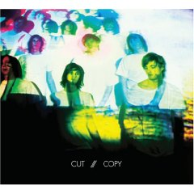

|
I try to compile this list as I go throughout the year. Invariably, what happens every year is that the 12 to 15 songs I have in June are no longer part of the list in December. I may have grown sick of them or maybe felt the song really wasn't as strong as I originally thought. I doubt I'm any more thoughtful about selections later in the year, it's just that I've had less time to grow sick of them. This song has been on my list since first hearing it and has stayed there. Cut Copy are from Australia and their AMG (All Music Guide) entry compares them with LCD Sounsystem, Daft Punk, and Air. How could I not like them. |
 |